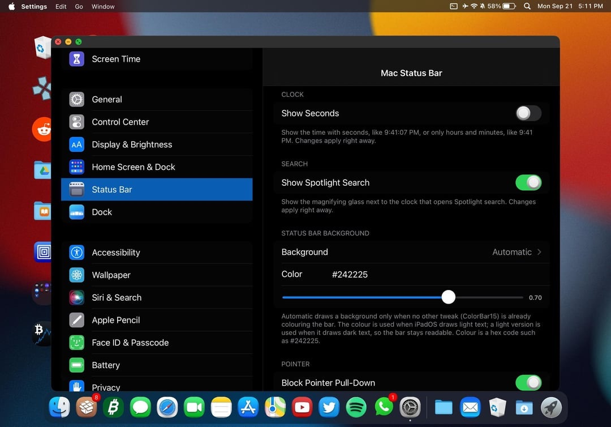
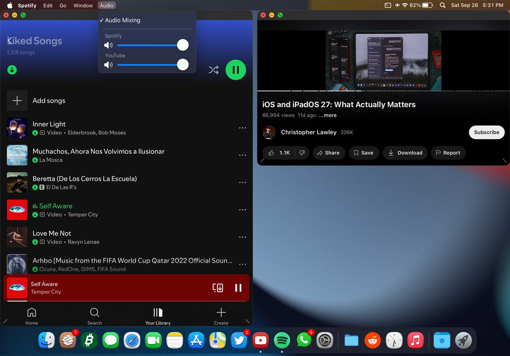
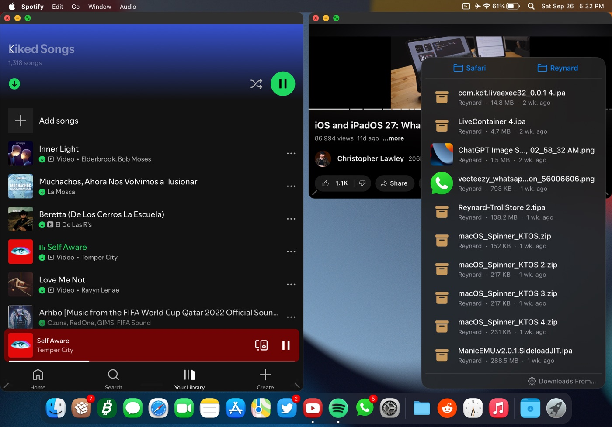
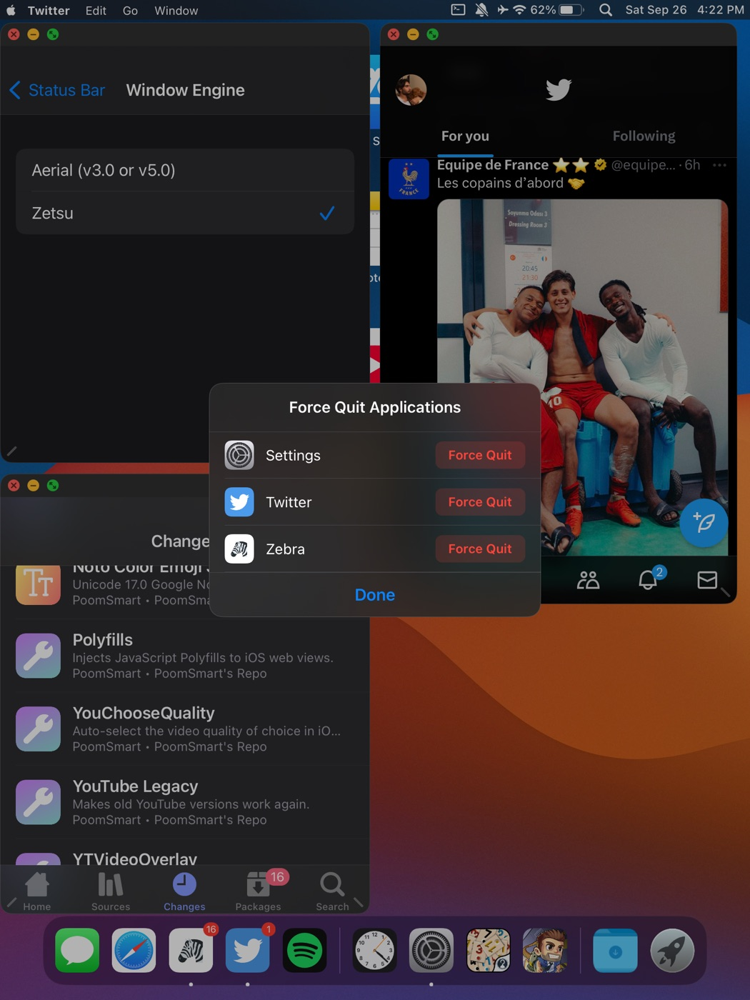

MacStatusBar&Dock




A menu bar with real app menus, Mac windows, a magnifying Dock and much more. It works with just your fingers or with a keyboard and trackpad or mouse, in portrait and landscape, every orientation. Optional extras, like the auto-hiding menu bar, start switched off, and most features have their own switch in Settings.
Features
Menu bar
A real Mac menu bar: an Apple menu (About This iPad, App Store, Force Quit, Respring, Safe Mode, Lock Screen, Sleep, Shut Down) and menus for the app in front (App, Edit, Go, Window), in every orientation, mirrored in right-to-left languages as on a Mac. Tap the clock for a Today drop-down with your widgets and notifications. Audio mixing per app, with a volume for each app. A VPN menu with Disconnect. Status Bar Style switches between Mac and the stock iPadOS bar.
Windows
Mac windows on the engine you already use (Aerial 3.0 or 5.0, Zetsu 1.6.2 or 1.6.6, MilkyWay4 on iPadOS 15): title bars, traffic lights, rounded corners, resize handles and Fit to Window tiling. Or Stage Manager as the window engine (iPadOS 16, experimental): Apple's own windowing with the Mac look, over your Home Screen and desktop. Windows stay where you put them and at the size you give them, also when you go Home, and an app can have more than one window. Only the window you're using keeps a text cursor, and Esc ends typing.
Mac Switcher
Desktops and Mission Control like on a Mac, in place of the App Switcher (Settings > Status Bar > Mac Switcher, off until you switch it on). Swipe up and hold, double press the Home button or press Control-Up on a keyboard to see your desktops and windows. Tap + to add a desktop (up to 8), swipe sideways with four fingers or along the bottom edge and the desktops slide with your fingers, and drag a window onto another desktop to move it. Desktops work with every window engine.
Finder
A Mac Finder window on every engine: sidebar, list and icon views, Quick Look, Search, Undo and Put Back, several-item selection and drag and drop into apps. It only changes files in your own places, so it can't be used to break the iPad by accident.
Drives in Finder
USB sticks, SSDs and SD card readers show up under Locations as soon as you connect them. exFAT and FAT32 work (FAT32 holds no files over 4 GB); APFS and Mac OS Extended should work too but are not tested yet; NTFS is not supported by iPadOS. SSDs may need more power: connect them straight to the iPad's USB-C port or use a powered hub.
Dock
A macOS Dock: magnification, recent apps, running-app dots, Finder and Launchpad at its start like on a Mac, and a Downloads stack with search that you can drag files into and out of.
Built to be safe
Automatic Crash Recovery: if a feature is followed by two SpringBoard crashes in a row, it switches itself off instead of leaving you in a crash loop, tells you in Settings and offers Report a Problem; another tweak's crash never switches MacStatusBar&Dock off. Off by default on untested iPadOS versions (unless you choose Enable Anyway), does nothing on an iPhone, and never contacts any server.
Also included
A Mac pointer (arrow and I-beam, with Pointer Control colors as an option), Mac-style notification banners, Mac-style Haptic Touch menus (Force Quit and App Size on app icons, folder shortcuts), a mute icon, Control Center from the menu bar, a customizable Go menu, an auto-hiding menu bar, Home Screen options (page dots, icon labels, Home Bar), Lock Screen options, keyboard extras (Cmd-Tab to the right window, Esc closes menus, Tab to mute, Globe volume and brightness keys), longer Auto-Lock times, an SSH switch, Ethernet settings and Reduce Motion support.
The Mac look is on right after install. Most features have their own switch in Settings > Status Bar and Settings > Dock, and windows only open once you choose Open Apps as Windows.
Which window engine?
Measured on both test iPads, Aerial 5.0 is the recommended window engine on newer and older iPads alike: every window test passed, memory use was the same as the others, and on the older iPad Pro 9.7" it opened windows about twice as fast as Zetsu from a cold start. Zetsu works well too and is a good alternative. MilkyWay4 runs on iPadOS 15 only.
Stage Manager (iPadOS 16) is an option on iPads that have it (or older iPads with TrollPad), tested on iPadOS 16.7.7; on earlier iPadOS 16 versions it may not work yet.
Report a Problem
the Report a Problem button (Settings > Status Bar, and the Automatic Crash Recovery note) opens a new GitHub issue in your browser, filled in with your iPad model, iPadOS version, window engine and its version, and the tweak's version. If the crash protection switched something off in the last 7 days, it adds what it turned off and when, and a few lines naming the tweak's own code that crashed (nothing from other apps or tweaks); on an untested iPadOS version, which of the tweak's switches are on. Nothing is sent by itself: you see the whole text first, can change or delete any of it, and it's only posted if you submit the issue (a GitHub account is needed). Nothing personal is included, and the tweak collects nothing in the background.
Compatibility
| iPad only | MacStatusBar&Dock checks your device and does nothing on an iPhone, even one made to look like an iPad by another tweak. |
| Tested | iPad Pro M1, iPadOS 15.6.1 (Dopamine) |
| Tested | iPad Pro 9.7", iPadOS 16.7.7 |
| Other iPads | iPadOS 15/16 will likely work (untested) |
| Known issue | iPad Pro (M2, 2022): the Stage Manager engine is offered on iPadOS 16.1 and later, and as "Untested" on 16.0, where a user confirmed the basics (windows, resizing, traffic lights); on 16.3.1 a user confirmed it can be picked and runs; on 16.1–16.6 another user reports SpringBoard crashes with it. Use Aerial 5.0 |
| Reported working | iPad Pro 10.5", iPadOS 16.6.1 (by users) |
| Jailbreak | Rootless only |
| Memory | On iPads with 2 GB of memory, iPadOS may close apps in the background when many windows are open, for example 7 with the Stage Manager engine. |
| External displays (iPadOS 16) | With the Stage Manager window engine the display gets its own Mac desktop (menu bar, Dock, windows, full screen, Window > Move to Other Display). Not yet: opening an app from the display's Dock brings that app's whole group of windows along (Stage Manager's own rule); after a respring, windows on the display come back only when opened again; a moved window keeps its size relative to the screen it came from; the Window menu doesn't check-mark the layout of windows on the display; up to 7 windows per desktop. With the other engines, windows stay on the iPad: open apps from the display's App Library to use them there. |
| External displays (iPadOS 15) | Mirrors the iPad for now. A real second desktop for iPadOS 15 is in the works, and an early version already runs its own menu bar, Dock and apps on a TV. |
| iPadOS 17 and others | Experimental: off until you turn on Enable Anyway in Settings, at your own risk (untested). Crash protection still works; reports welcome. The desktop, the Wi-Fi menu, the Mac Switcher and the Stage Manager engine have untested iPadOS 17 versions: testers welcome. |
On iPadOS 15, Safari's sound can stop another app that's playing alone (it plays on its own, as on a stock iPad). Control Center's Now Playing controls only ever show one app at a time (usually whichever started playing most recently), even while several apps are playing together with Mix Audio. Stage Manager (iPadOS 16) stays off while windowing runs with a window engine, because two window systems would fight over the same apps. To use Stage Manager, turn off Enable Windowing in Settings > Status Bar; it comes back on by itself. Some apps, like many games, can't run in a window. Open those full screen. The camera only works full screen: iPadOS pauses it for apps in a window. The Camera app always opens full screen; for other apps, switch to full screen while you use the camera. Photos opened from inside the Camera opens full screen. Keep it full screen: turning it into a window then closes Photos (Photos can't change its layout while showing a single photo). Aerial 5.0 has to be activated in its own settings before it can open windows. Until then, apps open full screen, and a note leads you to Aerial's settings. With Aerial 5.0, don't respring while a VPN is on or was just turned off: Aerial goes online as SpringBoard starts and can hang on a black screen until you restart the iPad. MacStatusBar&Dock warns before a respring that goes through iOS (the Apple menu, Settings, Control Center toggles, package managers), not before one that ends SpringBoard directly. While Destra is switched on, it shows the notification banners instead of MacStatusBar&Dock (both at once squeeze every banner).
Both parts switched off? If you turn off both MacStatusBar and MacDock in Settings, their Settings pages go away too. Turn them back on in Choicy (or iCleaner Pro), then respring.
Requirements
- A hooking platform: ElleKit, libhooker, or Substrate
- Choicy or iCleaner Pro (keeps only one window engine loaded)
- Optional window engine: Aerial 3.0 or 5.0, MilkyWay4 0.1.1 (iPadOS 15 only), Zetsu 1.6.2 or 1.6.6. Other versions run as plain windows, without the Mac look.
Changelog
1.4.1
- Fill and tiled windows keep a small margin from the screen's side edges, the same on every engine.
- Stage Manager engine with the Mac Switcher: a side swipe or Control-Left/Right made while a desktop slides in now changes where the slide goes, and a swipe can take a running slide with your fingers, as with the other engines.
- Mac Switcher: the end of a desktop switch no longer flashes darker for a moment.
- Mac Switcher: after adding a desktop with +, the first trip back no longer shows the Mac Switcher over the Home Screen for a moment.
- Mac Switcher: when you drag a window to another desktop and then switch desktops, the desktop you leave no longer shows a picture of the Mac Switcher itself.
- Reinstalling MacStatusBar&Dock, switching between it and a beta, or updating it together with a window engine keeps the window engine you picked from the first start, so Stage Manager windows are no longer lost and no second respring is needed.
- Stage Manager engine: an app opened on a full desktop no longer shows the other windows flying to the left edge for a moment.
- Stage Manager engine with Reduce Motion: several quick swipes or Control-arrows during a desktop switch now move one desktop each, as with the other engines.
- iPadOS 15: the on-screen keyboard of an app in a window is upright at the bottom in both landscape directions, also after turning the iPad around and for apps that stay in one landscape direction (Aerial 5.0, Zetsu and MilkyWay4).
- With a hardware keyboard attached, the full on-screen keyboard you bring up is no longer covered by the Dock.
- Aerial 5.0: windows put in a layout right after a respring (Fill, the halves, Fit to Window) no longer reach under the Dock.
1.4
- Mac Switcher: desktops and Mission Control like on a Mac, in place of the App Switcher. Switch it on in Settings > Status Bar > Mac Switcher. Swipe up and hold, double press the Home button or press Control-Up on a keyboard to see your desktops and the windows of the one you are on.
- Desktops: tap + in the Mac Switcher to add one (up to 8), and drag a window onto a desktop to move it there. Swipe sideways with four fingers or along the bottom edge (three fingers on a trackpad) and the desktops slide with your fingers, as Spaces do on a Mac. Control-Left and Control-Right switch desktops from a keyboard. To remove a desktop, hold it and tap its remove button; its windows move to the desktop next to it.
- Desktops work with every window engine (Aerial, Zetsu, MilkyWay4 and the Stage Manager engine; tested with Zetsu 1.6.6), Fit to Window keeps its own arrangement on each desktop, and your desktops are still there after a respring.
- Stage Manager engine with the Mac Switcher: an app opened on a full desktop (7 windows) opens on a new desktop, and a short note says so. With 8 desktops already, that desktop's oldest window is minimized instead.
- The other ways to open the App Switcher (Globe-Up on a keyboard, and the App Switcher actions of AssistiveTouch and Back Tap) open the Mac Switcher too. Show App Switcher in the Apple menu opens the iPadOS App Switcher once when you need it.
- iPadOS 17 (with Enable Anyway): the desktop, the Wi-Fi menu and the Mac Switcher (off until you switch it on) are now offered there too. None of this has been tested on an iPadOS 17 device yet, so reports are very welcome.
1.3.9
- Stage Manager engine: two windows of the same app now work like any other windows. A new window of an app, for example a second Freeform window, opens on your desktop next to the others, and each window's traffic lights, Minimize and full screen act on that window only.
- Stage Manager engine: with Reduce Motion off, the Home gesture no longer shrinks your windows while you swipe. They go into the App Switcher only when it opens.
- Stage Manager engine: going Home with a swipe up from the App Switcher now keeps your windows too.
- Stage Manager engine: Force Quit now closes every window of the app.
- iPadOS 15: Force Quit in an app's menu in the App Library now quits the app instead of opening it.
1.3.8
- Stage Manager engine: your windows now stay on screen when you go Home, with the Home button, the Home gesture, Command-H or from the App Switcher, like with the other engines. A full-screen app goes to the background and the other windows stay. Opening an app only adds its own window.
- Stage Manager engine: after a respring your windows come back by themselves, like with the other engines.
- Stage Manager engine: pressing Home while you are on the Home Screen behind your windows works as it does on the Home Screen, for example going back to the first page. The Home Screen behind your windows also stays sharp during the Home gesture.
- Stage Manager engine: Minimize in the app menu now minimizes the window in front instead of putting every window aside.
1.3.7
- VoiceOver now reads the menu bar and its menus, the traffic lights, desktop icons and Finder items.
- Guided Access: while a session runs, the menus, the Today View, Finder windows, the desktop, the Downloads stack and the traffic lights stay out of the way, and the windows of other apps are hidden until it ends.
- Auto-Lock: the 30 minute, 1 hour and 2 hour options are no longer offered in Low Power Mode, since iPadOS would not keep them.
1.3.6
- Stage Manager engine: a desktop now holds up to 7 windows instead of 4. With Fit to Window, four windows stay tiled and the ones after them open as regular windows over the tiles, as with the other engines.
- Desktop icons now show up together with the app icons after a respring. Before, they came a few seconds later, along with the windows.
- Stage Manager engine: closing a window of an app that has several windows, like Safari, now closes only that window. Before, when it was the only window on screen, the app's other windows closed too, together with the windows next to them.
- Stage Manager engine: minimizing a window no longer hides another window along with it. On a desktop of four windows, minimizing the last one opened could also hide the one opened before it.
- Stage Manager engine: switching to another window engine and back without a respring no longer leaves the Home Screen hidden behind the windows until a window is tapped.
- Force Quit in an app icon's menu, on the Home Screen or in the Dock, now lets the menu finish closing before the app's window closes.
- iPadOS 16.0: a user confirmed the basics of the Stage Manager engine (apps open as windows, resizing and the traffic lights work) and that the menu bar works with Apple's own Stage Manager since 1.3.3. Settings keeps calling it "Untested" on 16.0 until a longer test is done. Thanks for the report.
1.3.5
- Stage Manager engine: windows now float over your Home Screen, like with the other engines. App icons, widgets and desktop icons stay visible and usable behind the windows.
- Stage Manager engine: all windows stay on one desktop. A window opened from the App Switcher, such as a minimized one, joins the open windows instead of hiding them, and a swipe in from the left edge no longer brings up Stage Manager's list of window groups.
- Stage Manager engine: Force Quit in an app icon's menu now closes only that app's window. Before, every other window on the desktop went with it.
- Stage Manager engine: an app you force quit while the windows were put aside (after going to the Home Screen) no longer comes back with the other windows (iPadOS 16.4 and later).
- Stage Manager engine: a new window no longer opens exactly on top of another window.
- Stage Manager engine with Fit to Window: after you turn the iPad, the tiles now end right above the Dock. Before, they could stop far above it until a respring.
- Stage Manager engine: a layout picked in the Window menu now goes to the app in front, even when another window is under the menu. Before, that window could move instead.
- Stage Manager engine: tapping Window in the menu bar now opens the menu when a window's top edge sits right under it. Before, the tap could do nothing.
1.3.4
- Stage Manager engine on iPadOS 16.0 and 16.1: it is offered there too now. These versions keep a window's size and position in another form, and 16.0 also lays out windows its own way, so the engine now uses each version's own way. It hasn't run on a 16.0 or 16.1 iPad yet. On 16.0 it shows as "Stage Manager (Untested)" in Settings > Status Bar > Window Engine. If you try it there, please send a report with Report a Problem in Settings.
- Stage Manager engine: with several windows open, picking another window engine and not respringing right away could crash SpringBoard, and so could switching MacStatusBar&Dock off or removing it. Stage Manager now switches off once no app is in front, for example on the Home Screen.
1.3.3
- Right-to-left languages: with Arabic, Hebrew, Persian or Urdu as the iPad's language, the menu bar is mirrored the way a Mac's is in those languages. The Apple menu and the app's menus sit at the right end, the clock and the status icons at the left, and each menu opens from the right edge of its title. Notification banners come in at the top left. The Dock follows iPadOS's mirrored Dock, with Finder at the right end and Downloads at the left, and the desktop stays on the first Home Screen page, filling from the top left. Before, the status bar could come out garbled, or disappear for about 30 seconds whenever an app opened or closed.
- Stage Manager engine on iPadOS 16.2 and 16.3: it is offered there too now (not tested on a device yet). iPadOS 16.1 still isn't supported.
- Switches in Settings > Status Bar for three things that were always on: Control Center > Hide Grabber, and under Apple Apps, Updates Tab in App Store and Hide Large Titles. They stay on after the update. Turn one off to get Apple's own look back: the line at the top of Control Center, the Arcade tab, large titles.
- Desktop: folders have a Mac folder icon, the same on every iPad, instead of a copy of the Files app's icon.
- Settings > Window Engine says why Stage Manager can't be picked on your iPad, and Report a Problem includes the Stage Manager check.
- Smoother on older iPads: the menu bar's checks and its layout do less work while apps open and close, and the Apple menu no longer reads the whole package list each time it opens.
- Smart Invert leaves the Dock's Finder and Launchpad icons, the Downloads stack, desktop and Finder icons and thumbnails, and app icons in menus as they are.
- Reduce Motion also covers dragging in Finder, swiping a banner away and the Wi-Fi password shake.
- Switching between 12-hour and 24-hour time shows in the menu bar right away.
- Dock with Show App Library in Dock turned off: the Finder icon is the same size as your apps, the Downloads stack shows at the end, and there is no empty space or extra divider.
- Stage Manager engine with Fit to Window: going to the Home Screen keeps the tile arrangement, and a swipe up from the bottom edge on the Home Screen no longer brings the windows back over it.
- Home Bar: with the Home Bar switched on, it no longer fades away in apps.
- Esc Ends Typing in Windows: terminal, virtual machine and remote desktop apps get their Esc key back.
- Force Quit Apps and the Audio menu no longer list apps you hide with AppHider.
- Globe + Option/Control for Volume: holding Command shows the app's keyboard shortcuts again.
- Tab Key Toggles Mute: Tab works as usual while Full Keyboard Access is on.
- Settings never replaces a Choicy setup it can't read.
- Window Engine: after another package restarted iOS's settings service, the helper could set Choicy up for the engine you had picked before. It now always goes by your current choice.
1.3.2
- Stage Manager engine: a window coming back from full screen now always lands below the menu bar, with its title bar and traffic lights on the screen, in every orientation. The same goes for windows brought back after you turn the iPad, minimized ones included.
- Stage Manager engine: with Open Apps as Windows off, an app opened when no windows are open now opens full screen like every other app, instead of at an old window size that could reach past the bottom of the screen.
- Stage Manager engine: Fit to Window tiles and Window menu layouts line up exactly under the menu bar.
- Desktop: the Dock reliably comes back in front after a desktop menu closes.
- Haptic Touch menus (iPadOS 15): the arrow of a submenu, such as Share, no longer covers the first letter of its name.
- Automatic Crash Recovery: a crash in the Stage Manager window engine now turns off only Windowing, and the Mac menu bar stays on.
1.3.1
- Desktop: dragging an icon right after holding it no longer opens its menu (on iPadOS 15 the menu could pick an item, such as Move to Trash, when you let go).
- Automatic Crash Recovery: after a crash that loops (a stack overflow), the feature that really caused it is the one switched off, not an unrelated one.
1.3
- Desktop: a Mac desktop on the first Home Screen page for files and folders in On My iPad > Desktop, placed anywhere and never over your apps, with selection, drag and drop and Mac actions.
- Wi-Fi menu: turn Wi-Fi on or off, see nearby networks and join one from the menu bar.
- Text files open in a small TextEdit window where you can edit them.
- Downloads in drag and drop: drop files onto the Dock's Downloads stack and drag them out of it.
1.2.6
- Menu bar (iPadOS 16.0): the first menu opened after a respring in landscape no longer opens laid out as if the iPad were in portrait.
- iPadOS 17.0 is reported working since 1.2.4 (iPad Pro 12.9", Zetsu 1.6.6, with Enable Anyway). Thanks to the testers who sent reports.
1.2.5
- Dock: Launchpad now sits next to Finder at the start of the Dock, like on a Mac, and Downloads moves to the end. On by default; Settings > Dock > Next to Finder puts it back at the end.
- Dock: the dots under running apps sit right below the icon again, inside the Dock, at every Icon Size. With a smaller Dock they had slipped below its background.
- Dock (Stage Manager engine): windows that come back after a respring show their dot right away, before iPadOS has restarted the app.
1.2.4
- iPadOS 17 (with Enable Anyway): the Mac menu bar now uses iPadOS 17's new status bar, which SpringBoard draws differently from iPadOS 15 and 16. Until now only Apple's own status bar showed there. Not tested on an iPadOS 17 device yet: if the menu bar still doesn't appear, Report a Problem now includes exactly what it found, which helps a lot.
1.2.3
- Finder: USB drives and SD cards show up under Locations as soon as you connect them, and leave when you unplug them. You can copy, move, rename and organize files on them like anywhere else in your own places. Moving something to the Trash on a drive keeps it on that drive (instant, and Put Back works), like on a Mac, and the Trash shows those items together with the iPad's.
- Finder: the window's status line shows how much space is free.
- Menu bar: iOS's loading spinner no longer appears next to Control Center, so the icons beside it stay still.
- Menu bar: the icon for an app's background activity (a FaceTime call, screen sharing) keeps its look but drops the large colored capsule around it.
- Copying a file larger than 4 GB onto a drive formatted as FAT32 isn't possible (a limit of that format); Finder says so before copying.
- Drives were tested on iPadOS 15. On iPadOS 16 they use the same system support, but haven't been tested with a real drive yet.
1.2.2
- Report a Problem on untested iPadOS versions (iPadOS 17 and later with Enable Anyway on): the report now includes a short record of how far the menu bar got while setting itself up, and the whole list of system methods the tweak couldn't find, so problems like a menu bar that doesn't appear can be tracked down.
1.2.1
- Finder: scrolling with a mouse wheel over a Finder window now scrolls its list (on iPadOS 16 it did nothing).
- Finder: after a message box over Finder closes, typing goes back to Search if you were typing there.
- Finder: dragging a large selection is smoother.
- Stage Manager engine: when SofaScore in full screen has to reopen in its iPad layout, it now comes back full screen instead of as a window.
1.2
- Finder: a Mac Finder window of its own, on every window engine. A sidebar with your places (On My iPad, Documents, App Documents, Applications, Home, iPad, Jailbreak, Trash), list and icon views with thumbnails, Search, Quick Look, Get Info, and the Finder, File, Edit, View, Go and Window menus in the menu bar while it's in front. Open it from Finder in the Dock or from the Go menu.
- Finder in the Dock: the first Dock item, like on a Mac, with a dot while a window is open. Settings > Dock > Show Finder in Dock hides it.
- Drag and drop: hold a file or folder for a moment and move it. Drop it on a folder, the sidebar or another Finder window to move it (hold Option to copy), or on an app window to hand the app a copy. Folders open when you rest a dragged item on them. Folders dropped on an app arrive as a zip.
- Share menu in Finder: send a file to Notes, Mail, Messages, Files or an app window that's open.
- Select several items: Command-click, Shift-click, Command-A, a selection rectangle with the pointer, or the Select button on touch.
- Undo (Command-Z) for moves, renames, new folders, duplicates and the Trash, and Put Back from the Trash.
- Rename in place (Return, like on a Mac), Go to Folder (Shift-Command-G), folders that update by themselves, and Mac keyboard shortcuts.
- Settings > Status Bar > Finder turns Finder off completely.
- Finder only changes files in your own places: On My iPad and its Documents, app Documents folders and Finder's own Trash. Everything else, including system folders, other app data and the jailbreak's files, can be opened and copied from, but not moved, renamed, deleted or written to. This can't be switched off, so Finder can't be used to break the iPad by accident.
- Empty Trash and Delete Immediately ask first and only ever act inside Finder's Trash.
- Apps receive their own copy of a dropped file, never your original. Copies are removed a minute later.
- Stage Manager engine: SofaScore opened as a window no longer closes itself right after launch.
Known limitations
- External drives (USB drives, SD cards) don't show in Finder yet. Use the Files app for them.
- iCloud Drive can't be opened from Finder, because iPadOS doesn't allow it there. Use the Files app.
- Drag and drop goes from Finder to apps, not from apps into Finder yet.
1.1.9
- Esc ends typing in windows works on iPadOS 16 again. iPadOS 16 gives every app a system Esc shortcut of its own, and the tweak took that as the app using Esc, so Esc no longer put the text cursor away. Esc shortcuts that belong to the app still come first, like cancelling a search in Notes.
- Globe volume keys (Globe + Option / Control) now work on iPadOS 15 too. They only worked on iPadOS 16.
1.1.8
- Dock: the Downloads stack has a search field under "Downloads From…". Type to filter your downloads by name as you go (letter case and accents don't matter). Return opens the first result, and Esc clears the field or closes the stack.
- Apple menu: "Update Available (version)…" appears under About This iPad when a newer MacStatusBar&Dock is waiting in Sileo or Zebra, and opens its page there. It only reads the package list your package manager already downloaded; the tweak itself never goes online.
- App menu > Share… works in apps whose Share button sits in a toolbar, like Notes: it now opens the app's own share options (Notes offers the note as a PDF, for example). If an app has no Share button, a share sheet for what's on screen opens instead of nothing.
1.1.7
- Stage Manager engine, Fit to Window: when a third app is added to two tiled windows, you now pick where it goes before it opens. Before, it could open behind the two windows while the question was up.
- Stage Manager engine: windows keep their layout when you turn the iPad. A window in a half or quarter goes to the same place in the new orientation, and any other window is kept inside the screen, so its title bar can't end up out of reach.
- Stage Manager engine: an iPadOS 17 version, experimental and not tested on a device yet. On iPadOS 17 the tweak stays off until you turn on Enable Anyway, and the engine is only offered where its startup check passes. Report a Problem includes what it found, so reports from iPadOS 17 help a lot.
- Stage Manager engine: with our resize handles, the bottom-left corner resizes the window with a finger too, not only the bottom-right one.
1.1.6
- Dock: "Remove from Dock" in the Haptic Touch menu of apps kept in the Dock, like on a Mac. The app moves to the first free spot on the Home Screen, so you can edit the Dock while windows cover the Home Screen.
- Windows follow the Dock. When you add or remove Dock apps, or change the Dock's size or its gap to the screen edge, windows move to the new Dock line right away. A window filling the desktop or sitting in a half or quarter keeps its layout, without a respring.
- Stage Manager engine (experimental): it now needs iPadOS 16.1 or later. On iPadOS 16.0 Apple has Stage Manager switched off, and turned on by hand it differs too much for the engine (#2).
- Stage Manager engine: it's only offered once its startup check has passed on your iPadOS version. The check now also runs when you use the stock status bar, and Report a Problem includes its result.
- Stage Manager engine: a newly opened app no longer comes up with its title bar and traffic lights under the menu bar when the Dock is showing.
1.1.5
- Dock: Gap to Screen Edge now works on iPadOS 16, and the Dock moves as soon as you change it, without a respring.
- Audio menu: per-app volume now works for Twitch and other apps built on the same video player, like Kick (#3). Their sound goes through a different part of iOS than most apps, which the volume slider didn't reach before.
1.1.4
- Stage Manager engine (experimental): safer on iPadOS versions it hasn't been tested on. At startup it checks everything it needs from iPadOS; if anything is missing or different, it stays off, the default engine runs instead, and Settings > Status Bar > Window Engine shows it as "Not Supported Yet" with the reason, instead of SpringBoard crashing.
- Stage Manager engine: app launches are only changed when every step checks out; otherwise iPadOS's own launch runs untouched.
- Stage Manager engine: Stage Manager is no longer switched on during startup, and follows Apple's own first-time path.
- The Window Engine picker marks Stage Manager as "Experimental".
- Stage Manager engine, Fit to Window: a window coming back from full screen takes its tile again instead of being asked about as a new third window.
1.1.3
- Aerial 5.0 is the recommended window engine on every iPad again. New installs no longer start with the Stage Manager engine; it stays available in Settings > Status Bar > Window Engine. It's tested on iPadOS 16.7.7 and may not work yet on earlier iPadOS 16 versions.
- Stage Manager engine: Fit to Window asks where a third window goes (left, right or No Fit), like the other engines, and keeps the arrangement you choose, also when the iPad is turned.
1.1.2
Fixes
- Stage Manager engine: touching a window behind another one brings it to the front when you lift your finger. This was missing from 1.1.0 and 1.1.1, so a scroll or tap in a background window left the other window active.
- Stage Manager engine: pressing the red or yellow button on a window behind another one no longer brings it straight back.
- Stage Manager engine: typing on the on-screen keyboard over another window no longer brings that window to the front.
- Stage Manager engine: with a hardware keyboard, a floating or a split keyboard, the Dock no longer hides as if the full keyboard were up.
- Stage Manager engine: Fit to Window tiles the windows again when the iPad is turned.
- Stage Manager engine: Bring All to Front and Send All to Back move every window at once.
- Stage Manager engine: a window leaving full screen comes back in front.
- Stage Manager engine: swiping up to the Home Screen or using the App Switcher over a window no longer brings that window back.
1.1.1
Fixes
- Stage Manager engine: full-screen apps (Safari and others) were drawn shorter than the screen, with their top cut off.
- Stage Manager engine: typing in a window could make the keyboard close again and again.
- Stage Manager engine: with Open Apps as Windows on, an app opened from the Home Screen onto an empty desktop opens as a window again, instead of coming back full screen.
- Stage Manager engine with an external display: the Window menu's swap rows and layouts work on the active window's own screen, and new windows on the display are placed within the display's desktop.
- Mac pointer: Use Pointer Control Style follows the pointer Color when it's set to None.
1.1.0
New
- Stage Manager window engine (iPadOS 16). Pick Stage Manager in Settings > Status Bar > Window Engine, and iPadOS's own Stage Manager runs your windows with a Mac look: title bars with traffic lights, native full screen, the Window menu and resize handles. It works on iPads with Stage Manager, and on older iPads with TrollPad. It's the recommended engine where it's available, and new installs on those iPads start with it.
- Windows open on the desktop together, from the Home Screen, the Dock, Spotlight, notifications, links and our menus. A fifth window minimizes only the oldest one.
- Full screen stays on the desktop: other windows can come in front of or behind a full-screen app, as with the other engines. The green button toggles back to the window.
- Window menu: layouts, Fit to Window, Swap rows, Minimize All, Bring All to Front / Send All to Back, and Move to Other Display.
- Resize Handles: choose ours or Stage Manager's, and tint either one.
- A window in the background comes forward when you lift your finger, so scrolling in it doesn't turn into a tap.
- External display with the Stage Manager engine (iPadOS 16). The external display gets its own Mac desktop, with a menu bar, Dock and wallpaper. See "External display" below for what it can and can't do yet.
- Traffic lights everywhere: grey on inactive windows, with symbols on hover or press, for every window engine.
- Use Pointer Control Style (Settings > Pointer): the Mac pointer can take the Color, Border Width and Increase Contrast from the Pointer Control settings on the same page. It's off by default, so the pointer starts as the classic black-and-white arrow.
- One-time notice after updating on iPadOS 16: Stage Manager is now a window engine, with a button that opens the Window Engine picker. iPads without Stage Manager get a note that TrollPad turns it on.
Improvements
- Resize handles start untinted. Turn on Tint Resize Handles in Settings > Status Bar to give them each app's color; if you had already switched it on yourself, it stays on.
- The traffic lights look up the active app once per change instead of on every frame.
Fixes
- With an external display, the Mac pointer no longer stays behind on the iPad's menu bar after the pointer moves to the other screen, and it points the right way after the iPad is turned.
External display (iPadOS 16, Stage Manager engine)
Works:
- Its own desktop: menu bar (Apple menu, app menus, status items), Dock, wallpaper.
- Windows with title bars and traffic lights; the front window on the display drives its menu bar.
- Window > Move to Other Display, in both directions.
- Window menu layouts use that display's own size, above its Dock.
- Full screen on the display (its Dock hides), independent of the iPad.
- Apps opened from the display's Dock open there.
Doesn't work yet:
- Opening an app from the display's Dock brings that app's whole group of windows to the display (Stage Manager's own rule).
- After a respring, windows on the display come back only when they're opened again.
- A window moved to the other screen keeps its size relative to the screen it came from.
- The Window menu doesn't check-mark the current layout for windows on the display.
- Up to 4 windows per desktop (Stage Manager).
- Tested with a wired display (Lightning to HDMI); AirPlay is untested.
In the works
- A second desktop on external displays for iPadOS 15. An early version already runs its own menu bar, Dock and apps on the TV, separate from the iPad. It isn't in this update: it still has to handle the pointer on the TV.
1.0.10
New
- VPN menu in the status bar: while a VPN is connected, iOS's own VPN badge shows as its own item next to the status icons, like the VPN menu on a Mac. Its menu shows the VPN's name, Disconnect (auto-connect is turned off too, so it stays off), a button that opens the VPN's app and VPN & Device Management.
- Respring warning with Aerial 5.0: Aerial 5.0 goes online while SpringBoard starts, and with a VPN on (or just turned off) that can hang on a black screen. Resprings now warn first (the Apple menu, Settings, Control Center toggles and package managers that use iOS's standard respring), with VPN Settings, Respring Anyway and Cancel.
- Haptic Touch Menus: choose Mac or Stock in Settings > Status Bar > App Menus. Mac menus have slimmer rows and adapt to a trackpad or mouse.
Improvements
- Dock and Home Screen Haptic Touch menus open without a pause right after a respring.
- Long notifications show as much of the message as fits the full banner width, instead of a narrow column.
- Mac-style banners step aside while Destra is switched on (both at once squeezed every banner); Settings says which tweak shows them.
- Automatic Crash Recovery tells a stuck SpringBoard (restarted by the system) from a crash, and no longer turns MacStatusBar&Dock off when another tweak was the one stuck. Report a Problem explains what happened instead of "the crash report could not be read".
Fixes
- The VPN menu's Open button opened nothing, and VPN & Device Management was missing or opened General.
- The VPN icon could briefly overlap the Airplane Mode icon right after a VPN connected.
1.0.9
Fixes
- The date and time could overlap in the status bar after an app was opened from a link (for example a Reddit link in Safari): iOS left a second time label visible next to the clock.
1.0.8
Improvements
- Window sizes stay steady with Aerial 5.0: tiled windows are the same height, and new windows no longer make a small second move after they appear.
- Windows minimized before a respring no longer flash up while they're brought back.
- Tinted resize handles now do their work only for apps that are in a window (less background work).
Fixes
- Fill Screen (and the other Window menu layouts) chosen for an app in full screen came out about 4% smaller than the screen with Aerial 5.0.
- Fill Screen could leave a gap above the Dock after turning the iPad.
- Reddit's Home feed could skew after its window was resized.
1.0.7
New
- Tinted resize handles: a window's resize handles take a soft version of its app's button color or icon color (Notes yellow, Settings blue, WhatsApp and Spotify green, themed icons included). Switch: Settings > Status Bar > Windows > Tint Resize Handles.
- Esc ends typing in windows: Esc puts away the text cursor in a windowed app, like clicking the desktop on a Mac. Terminal apps keep their Esc, and apps that use Esc themselves are left alone. Switch: Settings > Status Bar > Keyboard.
- No Fit: the "Where should it go?" question for a third window has a No Fit button in the middle (tapping outside the sides does the same). The app opens untiled in the middle, and Fit to Window leaves it alone until it's closed.
Improvements
- The third window's side question now comes before the app launches, so the app opens straight into its place instead of being squeezed in afterwards.
- Only the window you're using keeps a blinking text cursor, also with a hardware keyboard: clicking another window, the desktop or the Dock ends typing in the others.
Fixes
- Messages: tapping Send did nothing in a small window (the Return key still worked).
- iPadOS 16: the first tap on a Dock icon after a while could be lost, or pull down Notification Center.
- Fill Screen chosen for an app in full screen was undone by Fit to Window.
- Reddit's Home feed could open skewed in a window.
1.0.6
- Fixed: in rare cases iOS kept sending a windowed app the same update over and over (about 130 times a second) until the next respring. Video stuttered, touches lagged and the battery drained about twice as fast. Seen with YouTube on an older iPad; such repeats are now stopped.
- Fixed: with Fit to Window, a side picked for a third window could be undone, leaving the window in the middle of the screen; a new window moved aside so it doesn't cover another could also be put back on top of it.
- Fixed: a window left slightly scaled down by an animation came out smaller than asked by Fill Screen, Fit to Window and tiling.
- Fixed: SpringBoard's memory could slowly grow with every Control Center open when a tweak that adds Control Center gestures was installed.
- Fixed: MilkyWay4 windows: dragging the drawn resize corner now resizes the window (it used to reach the app underneath).
- iPadOS 18 (experimental): four more parts follow iPadOS 18's renamed internals: the App Switcher, the ringer switch, and the Dock's suggested apps.
- iPadOS 17 and 18 (experimental): the Settings entries no longer risk hiding another tweak's entry with a similar name, and the version checks are lighter.
1.0.5
- New: your notifications in the Today panel (tap the clock). They appear in their own box above the widgets, newest first, with the newest 5 shown and "Show N more" for the rest. Tap one to open it, swipe left to clear it, or use Clear for all. The box hides itself when there are none, and works with Lock Screen tweaks that group notifications. Switch: Settings > Status Bar > Notifications in Today View.
- Fixed: SpringBoard could freeze while scrolling far down the Today panel.
- iPadOS 17 and 18 (experimental): Report a Problem now includes a short diagnostics section (which parts of the tweak don't match this iOS, and the Dock's layout), names and numbers only, so issues that don't crash can be fixed too.
- Report a Problem's explanation in Settings now says what it's for and what the report contains.
1.0.4
- Experimental fixes for iPadOS 17 and 18 (not tested on those versions yet): the Mac status bar no longer crashes at every respring on iPadOS 18 (it asked iOS for its lock screen manager too early), the multitasking dots can be tapped again, and the Dock has no stray line or extra width at its right end. iPadOS 15 and 16 are unchanged.
1.0.3
- Experimental fixes for iPadOS 17 and 18 (not tested on those versions yet): the Dock background no longer extends past its edge on the right, the running-app dots sit below the icons instead of on them, and two likely causes of crashes with Split View & Slide Over or Stage Manager are removed. iPadOS 15 and 16 are unchanged.
1.0.2
- Fixed: tapping the Dock icon of an app that is already open full screen now turns it into a window (with Open Apps as Windows on), like its green button. Before, the window vanished again and the app stayed full screen (on some iPads also turned to portrait).
1.0.1
- Fixed: with Aerial 5.0, an app opened from its Dock icon could come up tiny and distorted (with its traffic lights) and stay that way until full screen and back. Windows already affected repair themselves.
- Fixed: with Fit to Window on, a second window opened from its Dock icon lost its tile.
- Fixed: on the Lock Screen (and with it pulled down), only the Apple menu shows: no traffic lights or app menus left from the app that was open.
- iPadOS 17 and newer (experimental): the Status Bar and Dock pages always show up in Settings now, so Enable Anyway can be reached. They are also listed with your other tweaks.
1.0.0
First public release: MacStatusBar, MacDock and Settings pages in one package.
Credits
Window engines
MacStatusBar&Dock gives a Mac look to windows from these engines. Thanks to their developers:
- Aerial by uz.ra
- MilkyWay4 by akusio
- Zetsu by Dcsyhi
Inspiration
Thanks to these tweaks for setting the bar:
- Arrow, Finally. by Andy Ching, for the Mac pointer
- Lynx 2 by MTAC
- Single Mute by 82Flex, for the mute icon
This tweak does not include or modify any of their files.
Version 1.4.1 · iPadOS 15.0–16.7 · by besiktasliseba